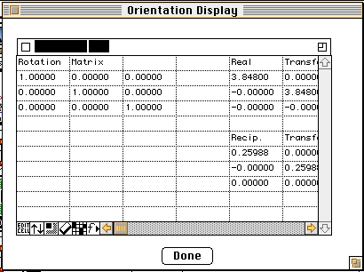

Distributed By: Virtual Labs
Orientation Matrix Dialog Box
PATH...:Parameter Menu::Beam Orientation...(Click on Show Matrices Button)
PATH...:Parameter Menu::Stage Control..(Click on M Button)
PATH...{Stereographic Projection Object}:Pole Figures:Find OR For 2 Poles<The
user must then select 2 unrelated experimental poles using a shift-click
and then a click on the respective pole>(Click on Show Matrices Button)
PATH...{Stereographic Projection Object}:Pole Figures:Show Orientation Matrix
(click on an Experimental Pole).

This dialog box can be accessed a number of ways but the goal is to display
a set of critical matrices for the current situation. This matrices include
the Rotation Matrix, The Real and Reciprocal Transform Matrices that convert
miller indices to Cartesian values, the two Transform Matrices multiplied
by the Rotation Matrix and finally a set of three planes and three directions
which define a particular orientation of interest (usually the orientation
of the crystal with respect to the current screen with the x axis horizontal
right and y axis vertical up).
However, the matrices shown for the Stereographic Projection:Pole Figure
are different:
- For theShow Orientation Matrix (click on an Experimental Pole).
option, the matrices shown correspond not to the spot click but to the
orientation of the crystal with respect to the Stereograms center, with
x corresponding to horizontal left and y corresponding to vertical up.
For the Pole Figures:Find OR For 2 Poles Click on Show Matrices Button)
the matrix displayed corresponds to the rotation or orientation of the 2nd
(precipitate crystal) with respect to the standard stereographic projection
of the first crystal [001] out, (-100) up.
Author: J.ames T.
Stanley
 Desktop
Manual:Dialog Boxes
Desktop
Manual:Dialog Boxes
Distributed By: Virtual Labs
Last Updated:July 6,1996